Carrick+Stone Assistant
Meet Carrick
A refined digital host for Carrick+Stone — guiding guests through wines, whiskies, pairings and curated recommendations.
Ask Carrick about a bottle, a dram, a pairing — or plan your visit to Carrick+Stone.

Carrick+Stone Assistant
A refined digital host for Carrick+Stone — guiding guests through wines, whiskies, pairings and curated recommendations.
Ask Carrick about a bottle, a dram, a pairing — or plan your visit to Carrick+Stone.